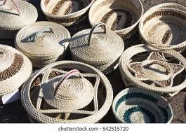

HAND WOVEN BASKET
Woven baskets used for storage and decoration.
Learn moreWoven baskets used for storage and decoration.
Learn moreHandmade pottery crafted with unique Basotho designs.
Learn moreColorful beadwork symbolizing beauty and tradition.
Learn moreSticks that are used by herd boys often practice stick fighting.
Learn more
Textile made from mohair, a luxurious fiber.
Learn more